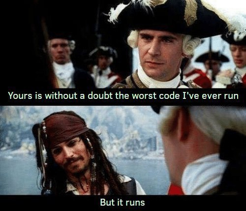

Write Reproducible and Readable Analysis Code
Find out how to make your analysis code easy to share, understand, and reproduce.
Dr Asier Moneva ![]()
Introduction
This ‘how-to’ guide aims to provide resources on good practices to improve the reproducibility and readability of analysis code to make it suitable for sharing. When I talk about analysis code, I mean coding instructions that systematically transform raw data into interpretable results through ordered, reproducible steps. This can range from a simple script or a set of functions to a complete software program. Many others, long before me and far better than me, have written extensively on this topic. Rather than reinventing the wheel, here I share some opinions and curate a selection of resources for the open software R that I have personally found valuable for various reasons.1
Writing analysis code is essential in scientific research because it contains the sequence of instructions needed to perform the analysis. This not only enables a clear understanding of what was done and how, but also allows others to reproduce the work, using the same code and data to reach identical results. Writing reproducible and readable code is therefore crucial for promoting transparency in scientific research.
This post, however, focuses not on the why, but on the how. Here, the main operational challenge is ensuring that the code runs correctly—a task that is far from trivial. Equally important is making the code easy to understand, so that others can read it almost as naturally as sentences composed of verbs, nouns, and adjectives. Achieving this clarity is no small feat either.

As long as the code runs, there isn’t a single “correct” way to write it, but there are guidelines that enhance both reproducibility and readability. These guidelines tend to be language-agnostic, applying regardless of the programming language you use (e.g., R, Python). Below I discuss some key areas to focus on for improvement.
Setting up a reproducible workflow
The first step to writing reproducible code is adopting an appropriate workflow. While this can feel cumbersome initially, doing it right greatly improves efficiency, saving countless hours of frustration from errors and incompatibilities. Thomas de Graaff delivered an excellent workshop on this topic in June 2021 at NSCR. As with this post, the focus was on the how, not the why.
A key element of a reproducible workflow in R is using projects. In this blog post, Jenny Bryan eloquently advocates2 for a self-contained, project-oriented structure because it simplifies your workflow by using relative paths and running scripts in a clean session. This approach ensures your project can be opened and run across different computers and users, while separating personal workflow habits from the actual analytic logic of your code. This is an important consideration for reproducible code: it must run not only on our own machine but also on others’. Since people use different operating systems, folder structures, and file paths, we need to ensure our code is cross-platform compatible. One effective way to achieve this is by incorporating the {here} R package into your project-oriented workflow.
Version control and dependency management
To allow others to see which exact code corresponds to which analysis, even after modifications, it’s important to use version control. A software tool that tracks and manages changes to files over time, facilitating version control and collaboration on code projects is Git.
In my opinion, the most convenient approach is to integrate version control directly within your coding environment. Platforms like GitHub come with built-in version control, making them much easier to use. Other tools, such as R, don’t include version control by default but allow seamless integration. For example, you can connect your analysis scripts to GitHub through RStudio, so each iteration is tracked with changes and update notes, while all previous versions remain accessible.3
This approach helps you track your code, but over time, the packages or libraries you use may change or become outdated. That’s why it’s important to manage your dependencies. If you work with R, {renv} is a valuable tool for reproducibility, as it helps to manage project-specific package versions ensuring consistent, isolated environments across machines.
Great, you have set up a reproducible work environment with version control. This means that even after long periods or when working with code written by others, you will be able to re-run any analysis from its first saved version and reproduce the exact results. Reproducibility scores!
The next step is choosing the type of document to write your code. The simplest option is a script, which lets you run code, add annotations, and view output in the console. However, other formats, like Quarto documents, are often more useful for academic work, as they generate clean reports that display results inline with the code.4 This makes the workflow clearer and easier to share.
Writing clean and readable code
You can now start working on your code. If you’re using R, you have two main options to choose from: base R or the tidyverse. This choice can be a bit tricky because people often have strong opinions on the matter. An advantage of base R is that it comes pre-installed and doesn’t rely on any external dependencies. On the other hand, the tidyverse offers a more readable and intuitive syntax. Feel free to explore and try both, and choose whichever works best for you. I prefer the tidyverse.
Another element that helps improve code readability is the pipe. Whether it’s the base R (native) pipe (|>) or the magrittr (tidyverse) pipe (%>%), this operator lets you pass the result of one step directly into the next, making your code flow more smoothly. The pipe can be read as “and then.” So, when you chain several functions together, you can think of them as a sequence of actions. For example, you might start with this data, and then select these columns, and then filter by this specific value, and then… (data |> select(column1, column2) |> filter(value == "specific") |> ...)
Unless you’re a coding mastermind (or even if you are), you’ll probably write multiple versions of your code, refining it with each iteration. Something that seems obvious but many beginners often overlook is that your coding should be linear. That is, so you don’t have to run the code in separate chunks, some of which come before, others after the current line. More than once, I’ve reviewed scripts where an object created at the end was used at the beginning. This means you can’t run the whole script at once—you have to run it in pieces and remember the order of those pieces! Therefore, it’s important to write code in a linear way, meaning objects are created before they are used and the code runs from start to finish in one go.
We’ve seen that pairing our code with version control lets us remember what we did and when we did it, but… how do we remember why we did it? This is a nerve-wracking question you will often encounter. There will come a time when you become proficient at reading analytic code and understand what’s happening, but still you won’t be able to read the author’s mind, so if some decisions seem questionable, you’ll never know why they were made. That’s why it’s important to annotate the code.
Annotations are comments we include in the script so that other humans can understand our code, including usage instructions and certain coding decisions. Hadley Wickham, renowned R guru, explains in his book R for Data Science (my personal R Bible, and that of many others) that “the what and how of your code are always possible to figure out, even if it might be tedious, by carefully reading it,” but that “figuring out why something was done is much more difficult, if not impossible”. That’s why it’s important to annotate the why.
On top of that, following all these steps can still result in chunky, gibberish-like, difficult-to-read code. Elements like spaces and line breaks, which don’t affect the functionality of the code, play a fundamental role in readability. This is a matter of style. There are different criteria for styling code, but some generally accepted rules include using spaces around operators (e.g. y = x + 3 instead of y=x+3), limiting line length of your lines (typically to 80–100 characters), and using consistent indentation (e.g., 2 spaces). If you’re not used to it, styling your code consistently can be tedious. Fortunately, since this is a rather systematic task, we can use automated tools like {air}. Air is a fast, automatic code formatter for R that keeps your scripts clean, consistent, and easy to read, running instantly on save or via a simple command.
Writing good and reproducible Software
At this point, I insist that if your code runs and is easy to follow, you should consider that a success. But for those of you who want to run the extra mile, here are some ideas you might want to reflect on to refine your coding skills.
When we finally write code that works and is readable, it’s fantastic. The feeling of satisfaction is real. In fact, the code is so nice that we might even want to reuse it. For example, we’ve coded a statistical model for a dependent variable ‘A’, and now we want to apply it to dependent variable ‘B’ as well. We’re tempted to copy and paste the code and simply change the name of the dependent variable. What the heck—we do it, and it just works! You feel like you’ve saved a lot of time. You think that maybe you can use it in series to explore the model on other dependent variables C, D, E… But beware! The more you copy and paste, the more “similar” code you’ll have to review if you need to make changes. And believe me, fixing problems in your code isn’t an easy task (it’s called debugging). Going through multiple lines of code that are practically identical is even worse. That’s why it’s recommended that if you have to repeat your code more than twice in your script, you should instead write a function. In the programming world, functions are reusable blocks of code that perform a specific task when called. If they’re designed for readability (*cough, cough*), the task a function performs is usually clear from its name (e.g., select, filter). R for Data Science has an entire chapter dedicated to writing functions, of course.
To avoid cluttering your script with custom functions, it is considered good practice to write them in a separate script (a module). Then you can easily use the function source() to load that script into your main script, keeping your analysis script clean. This is known as modular coding.
If you’ve created a bunch of functions for your analysis, you might want to consider compiling them into an R package: a collection of functions, data, and documentation that extends R’s capabilities. My favorite resource for creating R packages is the book of the same name by Wickham and Bryan. When I created my package {cacc}, I didn’t know where to start, so I gave this book a try. I followed it step-by-step, and a process that initially seemed overwhelming turned out to be relatively straightforward! 5/5 stars—highly recommended.
If you still want to go further, you might want to explore how to program efficiently, but it’s a topic I’m not yet comfortable with. So if you dive into it and learn something interesting, maybe you’d like to write your own how-to about it!
Licensing and sharing
The analytic code is finished and not only runs seamlessly, but is beautiful. It is proof that the analyses you performed lead to the results you obtained. Why keep this knowledge to yourself? Why not share it so others can understand and learn from your process? After all, this is what open science is all about!
To share your code, just like with other software, it’s usually a good idea to add an appropriate license. But there are many… too many! Where to start? GitHub has aimed to make this choice easier with ChooseALicense: a website that helps you select an open source software license that fits your project’s needs. I like simple things, so my default choice is the MIT License because it’s brief and permissive.
Now that your code is licensed, you’re ready to publish it. For the initial stages, I recommend using GitHub, as it’s designed specifically to store and share code. Among other features, it includes built-in version control, collaborative functions, bug tracking, and the ability to integrate it into your workflow through, for example, RStudio or OSF. (Pretty sure I’ve said this already?)
If you’ve refined your code and compiled it into an R package, you might want to upload it to The Comprehensive R Archive Network (CRAN) repository for wider visibility and discoverability within the R community. The CRAN volunteers will make sure your package undergoes automated checks to ensure cross-platform compatibility (think Windows and macOS), clear dependencies, and clean installation. These bonus points will undoubtedly make your package more attractive to other users.
Concluding remarks
Reproducible, readable code makes your research easier to follow, easier to check, and more likely to stand the test of time. Being able to reproduce someone else’s analysis—or your own after a long time—is incredibly reassuring. It serves both as a detailed account of the step-by-step analysis process and as proof that the results presented in the paper truly follow from the analyses conducted.
At the same time, reproducibility takes dedication, and the learning curve can feel discouraging at first—I know this firsthand. Without a clear starting point, the sheer number of available resources can be overwhelming (this is both the blessing and the curse of having such a large and helpful user community). That’s why I’ve written down a few ideas and gathered some of the resources that have been useful in my own learning journey. I hope they help you take your first steps too.
The contents of this website is available for re-use under a Creative Commons Attribution 4.0 International Licence.
Footnotes
Please note that this guide assumes you already have at least a basic understanding of programming. If you’re new to coding, you might want to begin with an introductory course first—The Carpentries may be a good place to start.↩︎
I still find the remote possibility of her coming into my office and setting my computer on fire to be a strong deterrent against disobedience.↩︎
If you’re working on projects with multiple components and want to keep everything centralized, you’re in luck since GitHub can also be linked to Open Science Framework (OSF) projects. OSF projects provide collaborative workspaces to organize and centralize research materials, data, code, and workflows, facilitating easy sharing and version control.↩︎
I tend to use scripts for tasks I find trivial at first glance, and Quarto documents for my scientific publications. Oh, and for writing this blog too—practicing what I preach here.↩︎